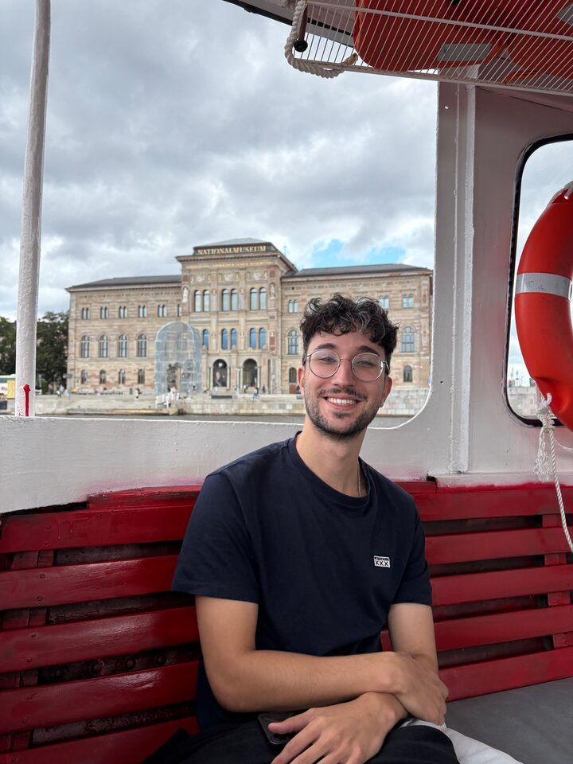
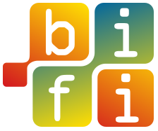

Hi, I'm Marco. I'm a physics PhD candidate who likes to do things with computers, mostly involving complex systems, artificial intelligence, and trying to understand how people and machines behave.
My research sits at the intersection of complex systems and artificial intelligence, drawing on statistical physics, network science, and stochastic modelling. I'm currently interested in whether large language models can reproduce human behaviour at scale, and in developing methods for the mechanistic interpretability of large language models. More broadly, I'm interested in using ideas from physics to understand complex systems, whether they are made of particles, people, or artificial agents.


Thesis: Deciphering data rich systems through the lens of AI.
Thesis: epidemic control in heterogeneous metapopulations.